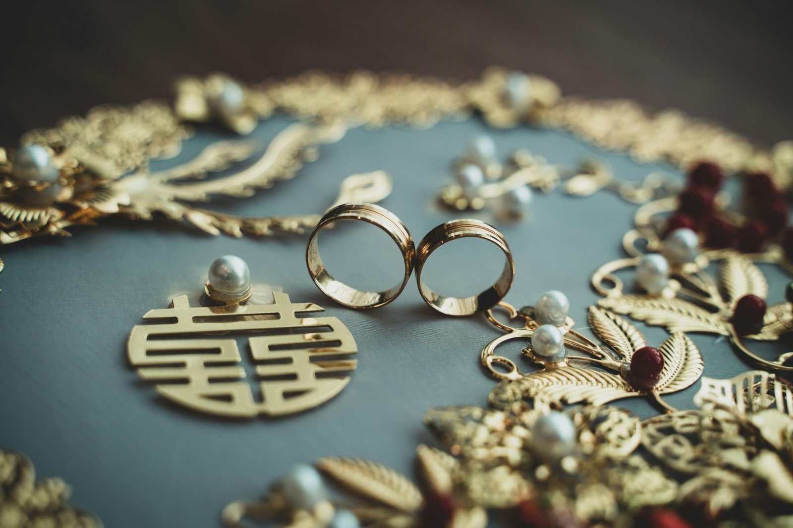
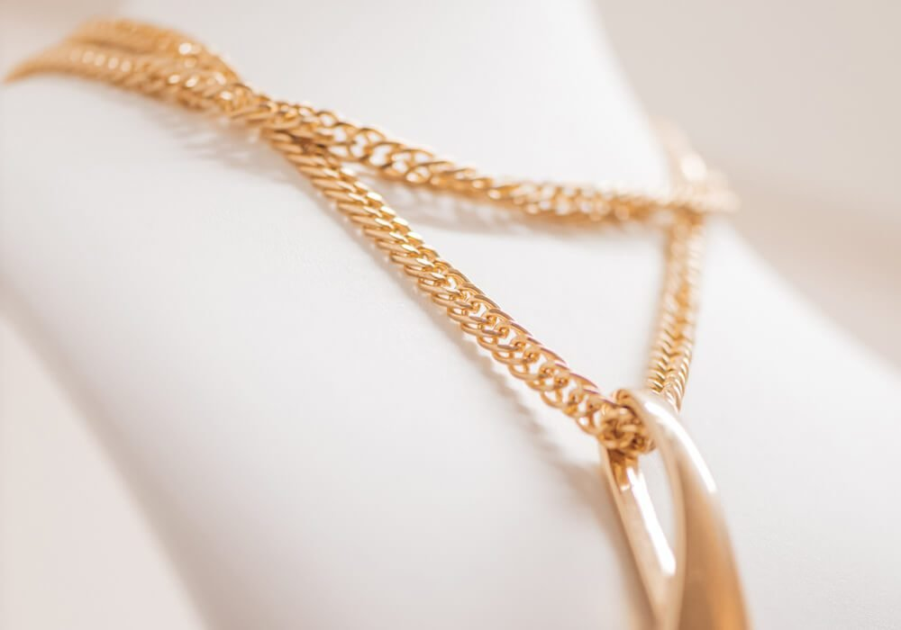
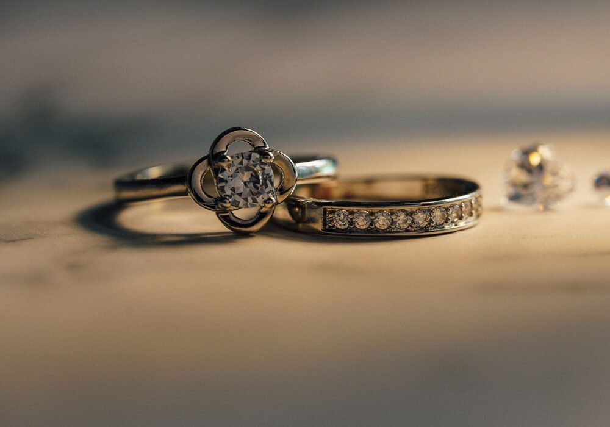
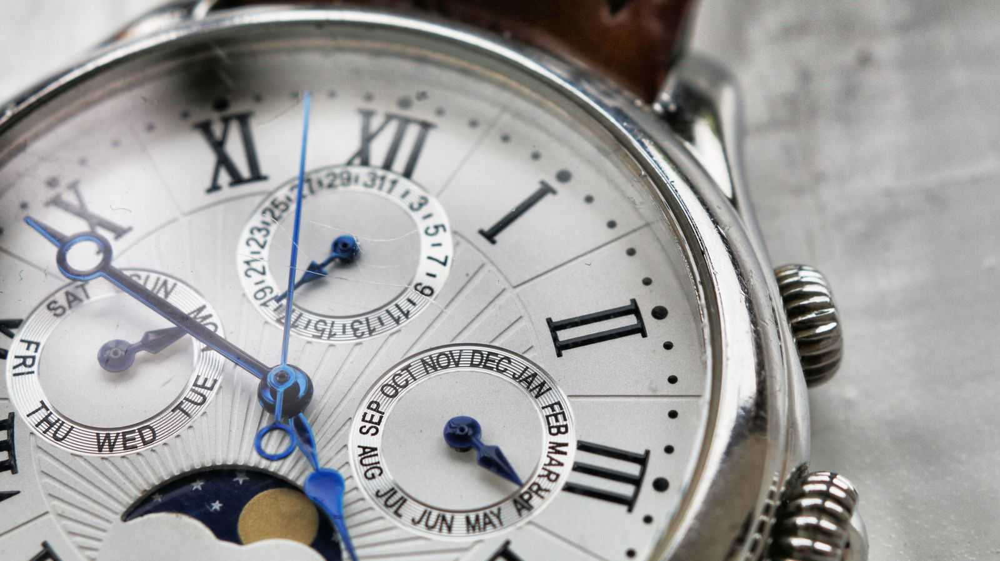
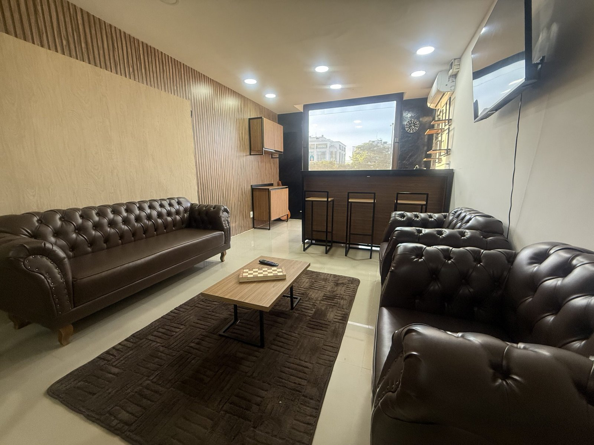

Conte sobre sua peça
Comece pelo WhatsApp. Conte o que deseja avaliar e tire suas primeiras dúvidas.
CADA PEÇA TEM UMA HISTÓRIA
Compramos ouro, joias e relógios.
Uma avaliação cuidadosa para transformar
o que você guarda no que vem pela frente.
Gratuita, reservada e sem compromisso.

O QUE COMPRAMOS
Da peça que você não usa mais
àquela que acompanhou gerações.

01Um novo destino para seus metais preciosos.

02Um olhar atento à singularidade da sua peça.

03Histórias que merecem uma avaliação individual.
Sua peça está quebrada ou incompleta? Ela também pode ser avaliada. Converse com a gente
SIMPLES, DO PRIMEIRO CONTATO À DECISÃO
Comece pelo WhatsApp. Conte o que deseja avaliar e tire suas primeiras dúvidas.
No atendimento presencial, a peça é examinada e você recebe uma proposta.
Você escolhe se quer vender. A avaliação é gratuita e não exige compromisso.

BALBI LOUNGE · BARRA DA TIJUCAUM ESPAÇO PARA RECEBER VOCÊ
Algumas decisões pedem uma conversa de perto. No Balbi Lounge, sua peça e sua história recebem atenção em um ambiente reservado.
Av. das Américas, 3939
Bloco 1 · Sala 209 — Barra da Tijuca, RJ
Segunda a sexta, das 9h às 18h
O CUIDADO CONTINUA
Nem toda peça precisa de um novo dono.
Às vezes, ela só precisa de um novo cuidado.
Converse sobre os reparos e o acabamento que a sua joia precisa. O serviço e o orçamento são definidos após analisar a peça.
Informe o material e o estado da peça para consultar as possibilidades de banho e acabamento.
Compartilhe sua ideia e converse com a equipe sobre a criação de uma joia.
Procurando uma joia ou relógio? Consulte a seleção disponível, os detalhes e os valores diretamente com a Balbi.
Consultar peçasO PRIMEIRO PASSO É UMA CONVERSA
Escolha o assunto e prepare sua mensagem.
O atendimento continua no WhatsApp da Balbi.
Segunda a sexta · 9h às 18h
ANTES DA SUA VISITA
Para chegar com mais tranquilidade.
Não. A avaliação é gratuita, e a decisão de vender é sua.
Sim. Peças quebradas, desgastadas ou incompletas também podem ser avaliadas.
O agendamento é recomendado para organizar seu atendimento. Fale com a equipe pelo WhatsApp antes da visita.
Uma foto ajuda na conversa inicial. A proposta depende da análise da peça; confirme com a equipe o que levar ao atendimento.
O valor da peça.
O respeito pela história.